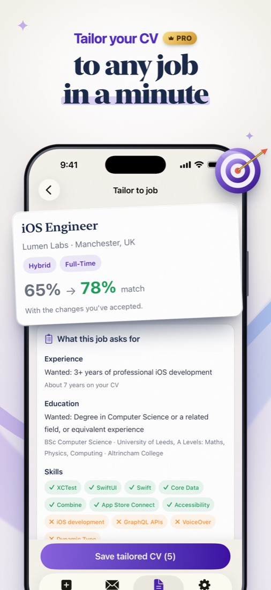
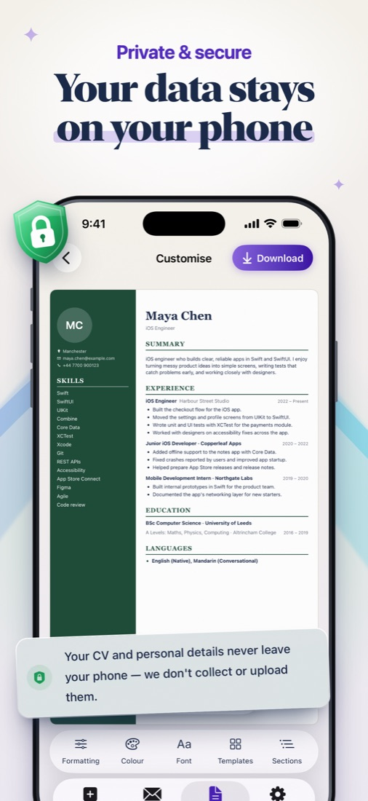
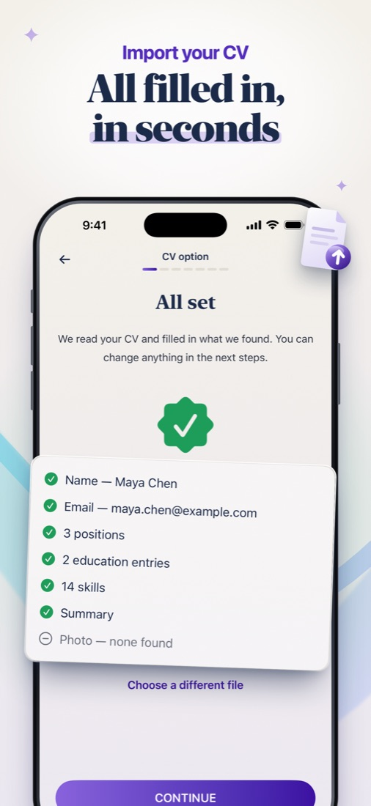
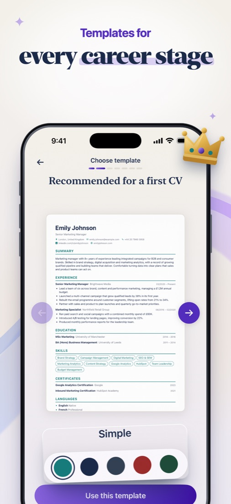
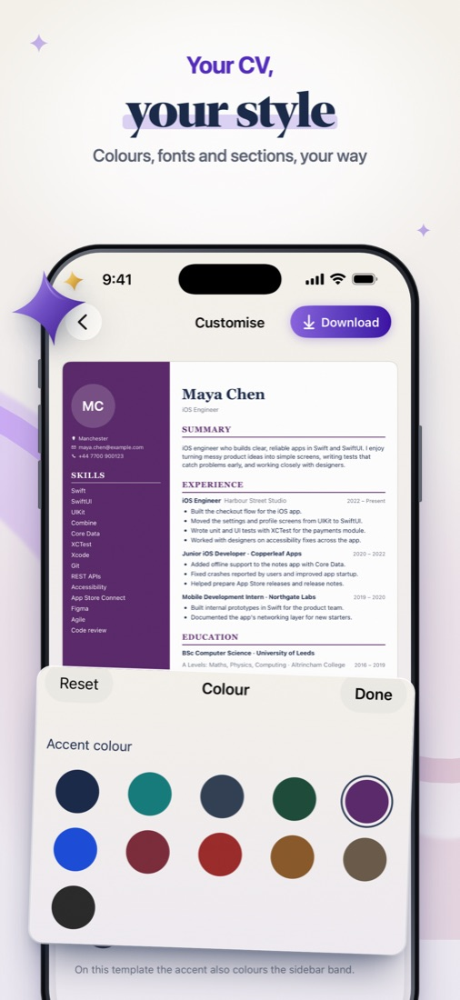
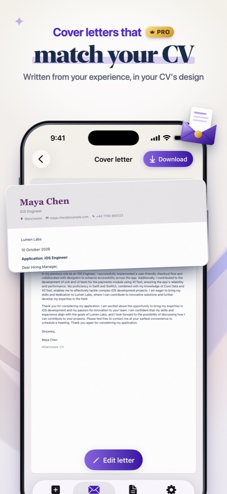

Your next job starts with a better CV.
Build a professional CV in minutes, tailor it to every job ad and write a matching cover letter with AI, all on your iPhone.
Download on the App StoreEverything you need to get hired
CV maker, resume builder and cover letter writer in one app.
ATS-friendly templates
15 professional designs, from classic to modern. Make each one yours with accent colour, font and an optional photo.
Import your CV
Bring in your old CV from PDF or Word and pick up where you left off, or start from scratch with step-by-step guidance.
Tailor to the job
Paste a job ad and see which skills and requirements your CV covers, and what's missing.
AI that never invents
Skill suggestions, summary drafts, stronger bullet points and cover letters, all from what's already in your CV. You approve every change.
Private by design
No account, no sign-up. Your CVs, letters and photo stay on your iPhone, and the AI runs on your device.
Polished PDF
Download in A4 or US Letter, then share, print or email it straight from your phone.
See it in action






Frequently asked questions
How do I restore my purchase?
Open Settings in the app and tap Restore purchases, or tap Restore on the Pro screen. Use the same Apple Account you bought with.
How do I cancel my subscription?
On your iPhone, open Settings → your name → Subscriptions → CV Maker Pro → Cancel Subscription. Cancel at least 24 hours before the period ends to avoid the next charge.
Why can't I see the AI features?
AI features use Apple Intelligence, so they need a supported iPhone (iPhone 15 Pro or newer) with Apple Intelligence turned on. Everything else works on any iPhone with iOS 26.
Where are my CVs stored?
Only on your iPhone. We have no server and no accounts, so we never see your CVs, cover letters or photo.
How do I delete my data?
In the app, open Settings → Delete all my data. Deleting the app also removes everything.
What's free and what's Pro?
Free: your first CV and cover letter, 3 templates and the job match report. Pro unlocks all 15 templates, unlimited CVs, cover letters and downloads, and every AI suggestion.